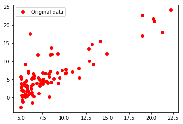
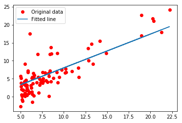

单变量线性回归——Pytorch实现
吴恩达老师机器学习课程中的线性回归采用的是Matlab编写的，我用Pytorch实现一遍。
x_train是房子大小
y_train是房子售价
最终目标是预测y_train
1 | %matplotlib inline |
使用numpy读入txt数据，np.loadtxt()
numpy.loadtxt(fname, dtype=<class 'float'>, comments='#', delimiter=None, converters=None, skiprows=0, usecols=None, unpack=False, ndmin=0, encoding='bytes')
从TXT文件中读入数据 文件中的每一行需要有相同的个数的数据
参数 fname : 文件名或者文件路径
dtype : 数据格式，可选，默认是float类型
comments : str or sequence of str, optional
The characters or list of characters used to indicate the start of a comment. None implies no comments. For backwards compatibility, byte strings will be decoded as ‘latin1’. The default is ‘#’.delimiter : str, optional
The string used to separate values. For backwards compatibility, byte strings will be decoded as ‘latin1’. The default is whitespace.converters : dict, optional
A dictionary mapping column number to a function that will parse the column string into the desired value. E.g., if column 0 is a date string: converters = {0: datestr2num}. Converters can also be used to provide a default value for missing data (but see also genfromtxt): converters = {3: lambda s: float(s.strip() or 0)}. Default: None.skiprows : int, optional
Skip the first skiprows lines; default: 0.usecols : int类型或者sequence类型，可选
Which columns to read, with 0 being the first. For example, usecols = (1,4,5) will extract the 2nd, 5th and 6th columns. The default, None, results in all columns being read.
Changed in version 1.11.0: When a single column has to be read it is possible to use an integer instead of a tuple. E.g usecols = 3 reads the fourth column the same way as usecols = (3,) would.unpack : bool, optional
If True, the returned array is transposed, so that arguments may be unpacked using x, y, z = loadtxt(...). When used with a structured data-type, arrays are returned for each field. Default is False.ndmin : int类型，可选，返回的array里至少有ndmin大小的维度
encoding : str类型，可选，对输入的文件进行编码设置，默认是'bytes'
Returns:
out : ndarray
Data read from the text file.导入数据
1 | import numpy as np |
将数据用matplotlib画出来
1 | import matplotlib.pyplot as plt |

设计并训练模型
1 | import torch |
Epoch [100/1000],Loss:11.1643
Epoch [200/1000],Loss:11.0105
Epoch [300/1000],Loss:10.8674
Epoch [400/1000],Loss:10.7343
Epoch [500/1000],Loss:10.6104
Epoch [600/1000],Loss:10.4951
Epoch [700/1000],Loss:10.3879
Epoch [800/1000],Loss:10.2881
Epoch [900/1000],Loss:10.1953
Epoch [1000/1000],Loss:10.1089